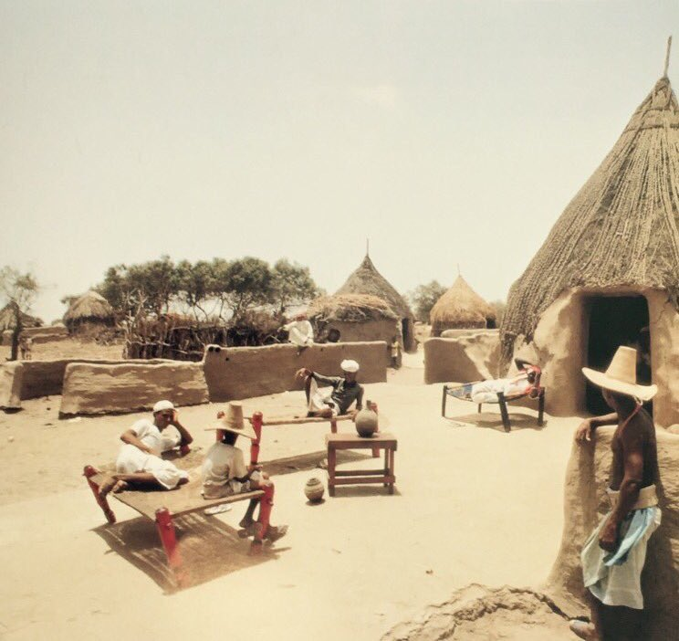

موقع رقمي لحفظ الصكوك والوثائق التاريخية لمنطقة جازان، مع صور قديمة وفيديوهات ولوحة مشاركات تسمح للإدارة بإضافة صورة ونص مثل المنتديات والبلاك بورد، مع إبراز تهامة والجبال والساحل والجزر.
القسم الأهم في الموقع: أرشفة صكوك الملكيات والمبايعات والأوقاف والمعاملات المالية مع بيانات دقيقة، صورة عالية الوضوح، تاريخ، موقع، تصنيف، وصف، وأسماء الشهود عند توفرها.
تم تخصيص صور وخلفيات للموقع تُبرز تهامة والجبال والساحل والجزر، ويمكن لاحقًا إضافة صور جديدة من لوحة الإدارة ضمن كل قسم.

لقطة قديمة توثق جانبًا من الحياة اليومية، بيوت العشش، الجلسات الشعبية، وملامح البيئة الريفية التي ارتبطت بذاكرة المكان والإنسان.
استعراض المزيد من الصور التاريخيةقسم شبيه بالمنتديات والبلاك بورد: يمكن للإدارة إضافة صورة مع نص وعنوان واسم كاتب لتظهر كمنشورات أرشيفية.
يمكن للإدارة إضافة الوثائق والصور والمنشورات من لوحة الإدارة، مع إمكانية كتابة موضوع كامل وإرفاق صورة مثل المنتديات.
إضافة مادة من لوحة الإدارة